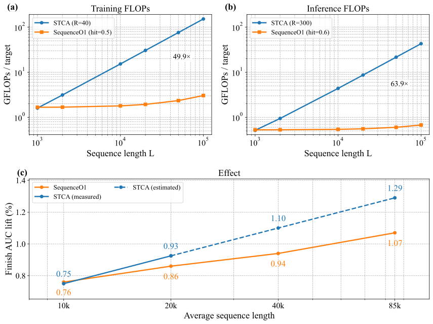
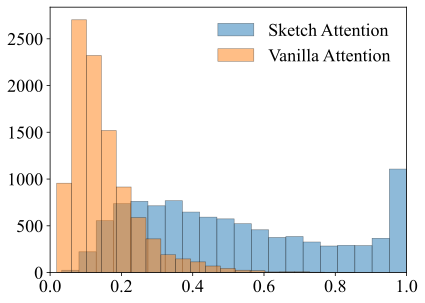

SequenceO1：基于低秩缓存的推荐中端到端超长（100K）序列建模
摘要
现代短视频推荐系统必须利用超长用户历史——每个用户的交互数可达数十万甚至数百万——但受限于严格的延迟和训练吞吐预算。 在100K规模下，瓶颈是系统性的，涵盖训练和服务两个环节中的特征存储、通信和计算。 基于截断、多阶段检索或长度外推的现有方案，要么牺牲了端到端建模，要么保留了随长度显著增长的系统开销。
我们提出SequenceO1，这是一个已在抖音全流量部署、处于100K规模并设计为可扩展至百万级历史的端到端框架。 其名称反映的是它的缓存命中路径：一旦固定大小的草图可用，该路径的开销相对于原始超长序列长度而言是。 在模型层面，我们提出草图注意力（Sketch Attention, SA），它利用可学习原型和按原型归一化（每个词元在原型上分配质量），将超长历史压缩为固定大小、仅依赖用户的草图。 随后我们在两个时间尺度上进行目标条件推理：在近期10K后缀上运行STCA以捕捉近期性，在固定大小草图上运行STCA以捕捉超长信号，再进行轻量融合。
在系统层面，训练侧本地键值缓存可在同一用户的重复实例之间复用仅依赖用户的草图，而同一可缓存状态也会在连续的服务请求之间复用。 我们进一步通过训练中的多请求用户级批处理，以及用于不规则批处理下草图的融合FlashSA内核来提升效率。 这些模型与系统优化共同使端到端100K序列建模在生产中变得切实可行，并为迈向百万级历史提供了一条可扩展路径。
1. 引言

SequenceO1通过基于原型的草图注意力将100K用户历史压缩为固定大小的草图，对草图进行精炼，并在下游排序器中融合近期历史分支与超长历史分支。MRLB、共享缓存、流水线提升和FlashSA在训练与推理过程中减少了重复的特征存储、通信以及仅依赖用户的草图计算。
十亿级规模的短视频推荐在很大程度上取决于对用户行为历史的建模。 行为序列建模在现代推荐系统中已被广泛研究，从目标条件兴趣建模到基于Transformer的序列推荐(Zhou et al., 2018, 2019; Kang and McAuley, 2018; Sun et al., 2019; He et al., 2023)。 在抖音上，仅一年的消费就很容易使每个用户累积约次交互。 这种超长历史包含稳定的偏好、反复出现的意图和周期性模式，而这些往往会被短窗口遗漏。 然而，精排阶段在严格的延迟和训练吞吐约束下运行，难以以端到端方式直接利用这些历史(Covington et al., 2016; Naumov et al., 2019; Mudigere et al., 2022)。 在100K规模下，这不仅仅是逐层计算的问题：嵌入和序列特征会增大训练样本和缓存占用，移动它们会加重主机—设备间和分布式通信的压力，处理它们则会增加训练和服务计算。
因此，生产系统常常依赖截断或多阶段长历史流水线，在最终排序之前检索与目标相关的行为、压缩长历史，或两者兼施(Pi et al., 2020; Qin et al., 2020; Chang et al., 2023; Cao et al., 2022)。 我们技术栈中的一个代表性基线遵循TWIN V2(Si et al., 2024)，它使用离线层次聚类来压缩终生行为，并使用带有聚类感知目标注意力的在线检索。 在我们的实现中，聚类后的历史包含约10K个条目，通用搜索单元（GSU）从中检索出一小部分与目标相关的子集，供下游细粒度兴趣建模使用。 尽管有效，这种设计将长历史压缩与检索同最终排序目标分离，限制了对原始超长历史的直接端到端优化，并增加了系统复杂度(Chen et al., 2021, 2022)。
一条更直接的路线是采用长度外推的端到端长序列排序：在较短历史上训练，在较长历史上服务。 Meta的HSTU使用随机长度采样来降低训练成本，而抖音的STCA则采用稀疏训练/稠密推理的方案(Zhai et al., 2024; Ding et al., 2026; Guan et al., 2025)。 然而，所报告的外推范围仍与训练长度耦合：ULTRA-HSTU报告称，平均训练长度约为4,400，用于在16,384推理，而STCA研究的平均训练长度约为2–2.5K，用于在10K上服务——两种情况下的推理长度均约为训练长度的四到五倍。 因此，通过外推达到100K仍需要大量的训练上下文，从而保留高昂的特征样本存储、通信和训练计算成本。 外推也无法消除服务瓶颈：原始HSTU的自注意力为，而STCA虽将每层复杂度降至，但其推理成本仍随原始历史长度线性增长。 此外，STCA的目标条件交叉注意力依赖于查询，几乎无法在不同目标之间复用计算。 因此，100K情形需要协调的模型与系统设计，以避免反复存储、移动和处理原始超长历史，而不是仅仅优化逐层计算(Wang et al., 2020; Wu et al., 2021)。
另一条路线是将超长用户建模与在线排序解耦。 LLaTTE(Xiong et al., 2026)和SOLARIS(Liu et al., 2026)等近期多阶段系统通过将异步用户表示传递给在线排序器来扩展推荐模型。 这减少了在线计算，但也引入了表示瓶颈、目标不一致以及上游用户模型与最终排序目标之间的新鲜度约束(Chen et al., 2021, 2022; Liu et al., 2022)。 因此，理想的100K方案应在降低训练和服务成本的同时，保留面向最终排序的端到端优化路径。
我们的关键观察是，用户历史中的超长部分应当既可压缩又可复用。 关于高效注意力的先前研究表明，长序列往往在长度维度上允许紧凑表示(Wang et al., 2020)，而固定大小的潜在摘要对于在下游推理之前压缩大输入也同样有效(Lee et al., 2019; Jaegle et al., 2021)。 在我们的设定中，100K序列应被总结为仅依赖用户侧信号的紧凑表示。 如果这样一种固定大小的用户表示能够被计算一次、缓存起来，并在重复的训练实例、目标和连续请求之间复用，那么昂贵的目标条件模块便不再需要直接作用于原始100K历史(Zhou et al., 2024)。
受此观察启发，我们提出SequenceO1，这是一个已在抖音全流量部署的端到端框架，可将序列排序扩展至100K规模。 “SequenceO1”这一名称指的是缓存命中路径：一旦固定大小的草图可用，该样本的原始100K特征序列便无需被物化、传输或处理，因此该路径相对于原始超长序列长度是。 如图2所示，SequenceO1将先压缩后推理的模型设计与跨训练和推理的缓存优先系统摊薄相结合。 在模型层面，我们引入草图注意力（SA），它将完整的K历史压缩为固定大小的草图，其中可灵活地从数百到数千不等。 SA使用可学习原型和按原型归一化，使每个历史词元的权重在各原型之间分配，从而产生与目标无关的用户草图。 该草图可视为沿长度维度的一种隐式低秩表示，其大小与无关。 随后，SequenceO1在两个时间尺度上进行目标条件推理：在近期10K后缀上运行STCA以捕捉对近期性敏感的信号，在固定大小草图上运行STCA以捕捉超长信号，再进行轻量融合。
在系统层面，我们首先使用训练侧本地键值缓存（本地KVCache）在同一用户的重复实例之间复用仅依赖用户的草图(Zhou et al., 2024)。 同一可缓存草图会在连续的服务请求之间复用；在缓存命中时，系统跳过重复的原始历史特征存储和通信，以及依赖于的草图计算，并且STCA推理始终在固定大小的输入上进行。 我们进一步通过多请求用户级批处理（MRLB）、流水线提升，以及受IO感知注意力内核启发的融合FlashSA内核来提升效率(Dao et al., 2022; Dao, 2023)，后者避免了在不规则批处理下物化大型草图中间结果。 与多阶段表示传递系统不同，SequenceO1在使100K计算固定大小、可缓存且可复用的同时，让超长序列路径与最终排序器联合优化。 我们在§5.5中比较这些缩放路线。
图1总结了由此产生的计算—质量权衡。 与在100K上朴素地应用STCA相比，SequenceO1在训练侧本地KVCache与MRLB以及服务侧缓存复用的条件下显著更便宜，同时保留了直接扩展序列长度所带来的大部分质量增益。 这使端到端序列排序能够在真实生产约束下从10K情形迈向100K。
我们将贡献总结如下：
-
•
基于SA+STCA的端到端100K排序。 我们将端到端长序列排序扩展到100K历史，方法是用草图注意力压缩超长历史，并在草图和近期10K后缀上应用目标条件STCA。
-
•
面向超长历史的可缓存低秩草图。 我们将SA设计为一个与目标无关的压缩模块，产生固定大小的仅依赖用户的草图。该草图可微、与长度无关，并可在目标与请求之间复用。
-
•
缓存优先的100K训练与服务。 训练侧本地KVCache与服务器侧草图复用，辅以MRLB、流水线提升和FlashSA，在缓存命中时消除了重复的、依赖于的特征存储、通信和计算。
2. 背景与符号
2.1. 问题设定
我们研究抖音上大规模短视频推荐系统的最终排序（“精排”）阶段。给定来自用户的请求，排序器为候选视频打分，在严格的延迟和成本约束下利用用户/请求特征、物品特征以及用户交互历史，并结合监督信号（如完播、点击、跳过）。
我们的重点在于精排阶段对超长用户历史的端到端建模。遵循工业实践，我们在训练和服务时都将每个用户的历史截断到最大长度，同时在该预算内尽可能保留更多的行为信号。
2.2. 符号说明
我们将用户交互历史表示为
| (1) |
其中是第个历史物品，是关联的动作类型。每个事件被嵌入为，目标物品由表示。
历史嵌入矩阵为
| (2) |
我们考虑两个时间尺度：长度为的超长历史（最长可达）以及长度为的近期后缀。 我们将近期后缀表示为
| (3) |
当时。 在我们的方法中，超长历史被压缩为长度为的固定大小草图（通常为–1024），该草图相对于被视为常量。
在全文中，表示原始超长历史长度，表示近期后缀长度，表示草图长度。 对于通用的STCA模块，我们用表示其输入长度；因此近期分支的，草图分支的。 我们用表示行为嵌入和SA的宽度，用表示STCA的每头宽度，用表示（在适用时）经草图适配器之后的STCA模型宽度。
2.3. STCA回顾
长序列排序中的一个核心挑战是对长历史进行交互建模的成本。标准自注意力产生复杂度，对应序列长度为，这在工业规模下是不可接受的。
堆叠式目标到历史交叉注意力（STCA）通过移除历史–历史注意力，转而从目标到历史应用堆叠的单查询交叉注意力来解决这一问题。给定目标查询和历史嵌入，一个STCA层计算
| (4) |
其中。
在单查询下，每层成本随线性增长，使得在生产环境中可以端到端排序至10K的量级。 然而，在K时，直接应用STCA对服务而言仍然过于昂贵，因为其占主导的目标到历史交叉注意力仍依赖于查询，并随原始历史长度线性增长。 这导致跨目标之间几乎没有可复用的计算，并促使我们将超长用户侧压缩与目标条件推理解耦。
2.4. 长度维压缩动机
高效注意力研究表明，长序列允许进行大幅度的长度维压缩。Linformer通过低秩注意力近似激发了长度为的短表示，而Set Transformer和Perceiver则使用诱导点或固定潜在数组，在表达性推理之前对大输入进行汇总(Wang et al., 2020; Lee et al., 2019; Jaegle et al., 2021)。它们共同表明，一小组学习得到的摘要词元可以用序列长度换取可管理的计算量。
Perceiver和poly-encoders通常使用潜在查询配合词元级softmax来选择输入(Jaegle et al., 2021; Humeau et al., 2020)；而SA则应用原型级softmax，使每个词元在原型之间被分配，从而鼓励与目标无关的历史覆盖。Slot Attention(Locatello et al., 2020)在归一化思路上最为接近，但其目标是迭代式以对象为中心的学习，而SA则面向严格延迟约束下的超长排序。此外，长度可达的可变历史使显式的长度相关投影缺乏灵活性，而通用压缩也无法自然提供固定大小、端到端兼容的、可跨目标和请求复用的仅用户侧状态。这些需求促使我们提出下文介绍的长度无关、参数高效且可缓存的SA机制。
3. 方法
我们提出一个用于K超长序列建模的端到端框架。核心思想是将超长历史压缩为紧凑的固定大小表示，然后在该表示上进行目标条件推理。关键在于，该压缩仅依赖于用户侧信号，使其可跨多个目标和连续请求复用。
3.1. 草图注意力（SA）
草图注意力得名于草图这一概念：一种在固定内存预算下保留来自大得多的对象中显著信息的紧凑摘要。 在我们的设定中，对象是超长用户历史，而草图是一组固定大小的用户侧表示词元。 这在思路上类似于Count Sketch(Charikar et al., 2002)等流式草图，但SA是端到端学习的，并针对下游排序进行优化，而非用于恢复手工设计的统计量。
给定超长历史嵌入，我们学习个可训练的原型，其数量可灵活从数百到数千不等，
| (5) |
它们充当一组紧凑的摘要槽位。为支持跨目标和请求复用，这些原型全局共享，因此所得表示仅依赖于用户历史。
我们将原型–词元亲和度计算为
| (6) |
其中。
原型级归一化。
我们不像标准注意力那样在词元维上归一化，而是在原型维上归一化：
| (7) |
等价地，
| (8) |
因此定义了一个词元到原型的分配。 与词元级归一化相比，这种分配避免了过早的词元选择，并鼓励在目标条件化之前覆盖整个历史，这在压缩表示必须以可复用方式支持多样目标时尤为重要。
草图构建。
我们对历史嵌入进行聚合以获得紧凑草图：
| (9) |
该操作是对历史词元的加权聚合，而非词元级选择。 所得草图具有固定大小、与目标无关且完全可微，适合缓存和端到端训练。
3.2. SA作为一种隐式长度维投影
3.3. 堆叠式细化
单个SA块产生一个草图。为提升容量，我们应用少量带残差连接的细化步骤。从开始，我们迭代计算
| (10) | ||||
| (11) | ||||
| (12) | ||||
| (13) | ||||
| (14) |
残差结构稳定了优化并保留了先前迭代中的有用信息，而FFN则将表示能力提升到线性聚合之上。在实践中，我们发现少量迭代（）足以建模超长历史。
3.4. 基于STCA的双时间尺度推理
我们结合两个互补的时间尺度：用于细粒度近期性建模的近期后缀，以及用于超长信号的压缩草图。
近期历史。
我们直接使用STCA建模最近的K个事件，其中：
| (15) |
超长历史。
在草图侧STCA之前，宽度适配器（不同于分配矩阵）将SA草图映射到STCA宽度，而映射目标表示：
| (16) |
然后我们在适配后的草图上应用STCA：
| (17) |
由于具有固定长度，一旦草图可用，该分支的成本就与原始序列长度无关。
融合。
4. 系统
本节描述使100K历史建模能够在抖音全量流量上部署的系统设计。 我们的指导原则是摊销：昂贵的超长压缩仅依赖于用户，应当只计算一次、跨候选复用，并在可能时跨邻近请求复用。 我们以训练侧的本地KVCache作为主要复用机制，并配合用于服务的相同缓存接口、MRLB、流水线提升以及FlashSA来实现这一原则。
4.1. 训练侧本地KVCache与服务复用
在训练期间，我们为超长SA草图维护一个本地键值缓存（本地KVCache），因为它与目标无关且仅依赖于用户侧信号。 请求特定特征，包括近期后缀和候选侧特征，不予缓存。 可选地，也可以缓存在固定模型版本下仍仅依赖用户侧输入的草图侧线性投影；在我们的复杂度分析中，我们采用不缓存适配器输出的保守设定。
每个缓存条目的键由用户id、模型版本、历史时间戳和草图配置构成。 我们采用基于TTL的失效机制并结合容量驱逐，以约束内存和过期程度。 在训练中，MRLB分组内3小时的TTL带来约的有效命中率。 在服务中，采用1小时TTL的相同缓存接口给出约的经验命中率。 这种共享的get/put接口减少了训练/服务偏差，同时大幅减少重复的100K特征存储、通信和草图计算。 报告的FLOP降低量以这些观测到的命中率作为工作点。 在缓存未命中时，额外的原始历史计算仅为仅用户侧的SA草图层，这部分仍可通过MRLB摊销或在上游执行。
4.2. 多请求级批处理（MRLB）
即使采用SA，构造仍然昂贵，因为它涉及100K个词元。 在生产中，用户常在短时间窗口内发出多个连续请求，而长期历史变化缓慢。 MRLB将同一用户的此类请求分组，只计算一次超长草图，并为组内所有目标复用：
| (18) |
请求特定组件，如近期后缀和候选特征，仍按请求逐个计算。
在实践中，我们限制聚合度以保持内存稳定，并在近期历史分支中应用请求感知掩码以防止跨请求泄漏。 通过摊销仅用户侧的草图计算，MRLB减少了重复的数据移动，并在100K设定下提升了训练利用率。
4.3. 流水线提升
精排通常只获得端到端延迟预算的一小部分，因为召回、粗排、过滤和特征获取已经消耗了大量时间。 在传统流水线中，排序侧序列建模必须等到候选集可用后才能开始。
由于仅依赖于用户侧信息，我们可以将该计算提升到请求入口或其他上游阶段，并将草图作为用户特征向前传递，如图2所示。 在缓存命中时，恒定时间的查找即可在原始100K特征序列被物化并传输到模型之前提供固定大小草图；在未命中时，仅用户侧的计算仍可与上游检索并行运行。 因此，缓存命中从样本路径中移除了原始长度的特征存储、通信和计算，而流水线提升进一步降低未命中时的延迟影响。
4.4. FlashSA：SA的GPU内核优化
朴素的SA实现会物化原型–词元亲和度矩阵，并且常常物化分配矩阵（见§3.1），产生中间存储，在K时伴随繁重的内存流量，同时在不规则批处理下多次GPU内核启动也带来低效率。 我们实现FlashSA，这是一个流式执行计算的融合内核：它执行分块亲和度计算、原型级softmax统计量（最大值和对数求和指数），以及最终聚合到，而无需在HBM中存储完整的分数。 这降低了峰值内存，通过更少的启动次数和更好的局部性提高了吞吐量，并通过数值稳健的softmax和累加稳定了混合精度执行。
这些组件共同使100K草图路径可复用、缓存友好且硬件高效，从而能够在抖音上以十亿级规模实现端到端100K序列建模。
5. 实验
评估设置。
我们报告两种离线评估设置。 大多数消融实验使用一种轻量级设置，其中使用简化的稠密组件以便高效实验，以STCA(512)作为基线，并聚焦于Finish AUC。 SA与原始注意力对比的诊断性实验还额外报告多任务UAUC，以验证归一化改动改善了多个互动目标。 生产环境离线评估和在线A/B测试使用完整生产排序器：基线为带有终身TWIN V2的STCA 10K，而SequenceO1移除TWIN V2，并将其替换为端到端100K草图分支。
5.1. 草图注意力与原始注意力对比

| Task | like | follow | clicmmt | comment | share | finish |
|---|---|---|---|---|---|---|
| UAUC | +0.10% | +0.20% | +0.09% | +0.19% | +0.14% | +0.01% |
我们分析在100K消融设置下，草图注意力（SA）中的原型级归一化与原始注意力的差异。 我们保持相同的基于STCA(512)的排序设置，仅替换超长压缩分支中的归一化机制。 对于每个采样样本，我们计算原型–词元权重矩阵，并记录与每个词元相关联的最大归一化权重。 由于原型级和词元级归一化在不同轴上操作，这些最大值并非校准后的置信度分数，不应作为原型专门化的直接证据进行比较。 图3改为在各自的守恒约束下报告原始分布，作为一种描述性诊断；直方图之间的偏移既反映了所诱导的分配行为，也反映了归一化域大小不同。
在原型级归一化下，每个行为词元被显式分配到各个原型上，这与在目标条件化之前构建与目标无关的摘要相一致。 这种分配可能为未来可能的下游草图到行为检索或局部细化提供接口，尽管这些操作并非本工作中评估的组件。 任务级证据来自表1：原型级归一化在多个互动目标上提升了UAUC，支持其在我们设置中作为构建可复用100K草图的更好机制。
5.2. 消融实验与压缩方法
| Variant | Change vs. final SA |
|---|---|
| Final SA (, , ) | 0.00% |
| : 1K512 | -0.04% |
| : 1K2K | +0.03% |
| : 23 | +0.02% |
| : 12864 | -0.10% |
| w/o action-side SwiGLU fusion | -0.20% |
| w/o per-layer Add&Norm + SwiGLU FFN | -0.10% |
5.3. 在抖音数据集上的离线性能
我们在完整生产抖音离线数据集上评估SequenceO1，并与带有终身TWIN V2的STCA 10K进行比较。SequenceO1移除TWIN V2，改用端到端100K草图分支，因此这一严格比较要求它在吸收先前模块长期信号的同时改进排序。表4报告跨互动目标的相对AUC和UAUC提升。
| Metric | Finish | Skip | Head | Like | Follow | Comment | Clicmmt | Share | Favourite | Dislike |
|---|---|---|---|---|---|---|---|---|---|---|
| AUC | +0.29% | +0.23% | +0.18% | +0.09% | +0.05% | +0.04% | +0.16% | +0.18% | +0.30% | +1.29% |
| UAUC | +0.40% | +0.43% | +0.46% | +0.72% | +0.58% | +0.43% | +0.61% | +0.94% | +1.47% | +3.63% |
尽管移除了TWIN V2，SequenceO1仍改进了每个被评估目标，表明100K分支成功替代了两阶段终身模块，同时在完整排序器中进一步提升了所有被评估指标。UAUC增益在偏好敏感目标（点赞、分享、收藏和不喜欢）上最强，而核心消费目标（Finish和Skip）也有所改善，表明其长期个性化比先前的基于聚类的流水线更有效。
5.4. 在线性能
我们在抖音和抖音极速版上部署SequenceO1一个月，将生产STCA 10K基线中的全生命周期TWIN V2模块替换为端到端100K草图分支。表5报告相对于对照组的30日活跃度、时长、Finish、评论、点赞和不喜欢的变化，包括总体以及按用户活跃度分组。
| Douyin | Douyin Lite | |||||||||||
|---|---|---|---|---|---|---|---|---|---|---|---|---|
| 30-Day Act. | Duration | Finish | Comment | Like | Dislike | 30-Day Act. | Duration | Finish | Comment | Like | Dislike | |
| Overall | +0.1968% | +1.4999% | +2.3256% | +3.5910% | +2.3617% | -6.9829% | +0.2335% | +1.6655% | +3.4872% | +8.6132% | +2.9399% | -5.9972% |
| Low-active | +0.5484% | +2.1476% | +3.2040% | +2.9099% | +3.5739% | -8.3061% | +0.6614% | +1.9989% | +3.9845% | +13.4620% | +6.1890% | -2.4977% |
| Middle-active | +0.5235% | +2.2408% | +3.1550% | +5.1155% | +3.0477% | -12.1796% | +0.4306% | +1.8468% | +3.0968% | +8.7780% | +0.0254% | -3.6990% |
| High-active | +0.1789% | +1.6334% | +2.4733% | +3.5232% | +2.1611% | -5.7208% | +0.3090% | +1.8161% | +3.4367% | +8.3048% | +3.2317% | -3.1752% |
| Full-active | +0.0622% | +1.2705% | +2.0744% | +3.1494% | +2.1376% | -7.8567% | +0.0853% | +1.5254% | +3.2774% | +7.5138% | +2.7786% | -6.5438% |
SequenceO1在两个应用上显著提升了活跃度、时长、Finish、评论和点赞，同时减少了不喜欢；Finish在抖音上提升+2.33%，在抖音极速版上提升+3.49%，表明持续消费更好。增益在各活跃度分群中保持稳定：低活跃用户在活跃度和时长上改善，表明重新参与，而高活跃用户在Finish和点赞上改善。总体而言，该模型跨平台和人群以稳定的长期偏好补充短期信号。
5.5. 与两阶段迁移的关系
近期工业系统常使用两阶段表示迁移：LLaTTE (Xiong et al., 2026)报告从上游用户建模到下游排序增益的–比率，而SOLARIS (Liu et al., 2026)在Instagram和Facebook产品上报告约和。由于这些结果来自不同系统，它们为迁移效率提供背景，而非提供同类可比的对照；我们的同系统证据来自用端到端100K草图分支替换生产TWIN V2。
在该消融中，图1(c)显示，SequenceO1保留了直接扩展STCA增益的，对应100K截断（85K平均长度）：对 Finish AUC。因此，它将序列长度扩展转化为排序增益，同时保留可缓存路径。与两阶段迁移不同，其更简单的草图仍与最终排序器联合优化，而不会成为固定的外部特征，并且可支持未来的图内草图检索或局部细化，二者均未在当前部署中评估。
6. 相关工作与讨论
6.1. 用户行为序列建模
用户行为建模是推荐系统的核心。 早期方法包括物品到物品协同过滤和马尔可夫转移模型(Linden et al., 2003; Rendle et al., 2010)，而深度学习引入了基于会话的RNN和大规模工业排序架构(Hidasi et al., 2016; Covington et al., 2016)。 基于注意力的模型后来成为主流：DIN和DIEN执行目标条件化的用户兴趣建模(Zhou et al., 2018, 2019)，SASRec和BERT4Rec使用自注意力进行序列建模(Kang and McAuley, 2018; Sun et al., 2019)，BST展示了工业排序中基于Transformer的行为建模(Chen et al., 2019; Huang et al., 2026)。 多兴趣方法进一步在大规模上捕捉多样化用户意图(Li et al., 2019)。
近期生产系统在服务约束下日益强调更长的历史。 PinnerFormer和TransAct在Pinterest改进了长期用户表示和实时动作建模(Pancha et al., 2022; Xia et al., 2023, 2025)。 其他系统从终身行为日志中检索、采样或压缩与目标相关的子集，包括SIM、UBR4CTR、SDIM、TWIN和TWIN V2(Pi et al., 2020; Qin et al., 2020; Cao et al., 2022; Chang et al., 2023; Si et al., 2024)。 特别地，TWIN V2使用离线层次聚类将生命周期行为压缩为可管理的簇，随后进行在线检索和簇感知的目标注意力以预测CTR。 这些方法在服务约束下有效，但其检索或压缩阶段通常与最终排序目标分离。
6.2. 缓存与复用
缓存策略的主要差异在于缓存对象是否对原始历史进行端到端处理，以及其大小是否随序列长度扩展。
UIC+MIMN (Pi et al., 2019)和HPMN (Ren et al., 2019)维护增量更新的用户状态，实现常数时间读取，但在推理时不能对原始超长序列进行端到端优化。面向CTR的方法通过分组、量化或聚类缓存与候选无关的摘要，包括DGIN (Liu et al., 2023)、DMQN (Wei et al., 2025)和C-Former (Wang et al., 2025)；VISTA (Chen et al., 2025)等生成式推荐器缓存摘要词元。这些方法通常针对较短时间范围或依赖分离的流水线。Transformer KV/前缀缓存减少重计算，但存储逐位置状态，因此缓存占用随长度增长(Wang et al., 2026; Li et al., 2026; Zhang et al., 2025; Yang et al., 2025)。相比之下，SequenceO1在训练和服务中缓存固定大小的仅用户SA草图（），使缓存大小独立于原始历史长度，并在缓存命中时消除重复的原始长度特征存储、通信和模型计算。
7. 结论
SequenceO1将基于序列的推荐端到端扩展到生产中的100K，并通过结合草图注意力、双时间尺度STCA推理和训练优先的缓存摊销，支持向百万级历史扩展。抖音实验在轻量级消融、完整生产离线评估和在线A/B测试中显示一致增益：紧凑的可复用草图保留了直接长序列扩展的大部分收益，同时在训练和服务中大幅减少特征存储、通信和计算。未来方向包括层次化或多分辨率草图，以及跨用户或行为模式的自适应容量；更广泛地说，结果表明协同的模型与系统设计可以共同实现超长建模和生产效率。
参考文献
- Cao et al. (2022) Yue Cao, Xiaojiang Zhou, Jiaqi Feng, Peihao Huang, Yao Xiao, Dayao Chen, and Sheng Chen. 2022. Sampling Is All You Need on Modeling Long-Term User Behaviors for CTR Prediction. In CIKM.
- Chai et al. (2025) Zheng Chai, Qin Ren, Xijun Xiao, Huizhi Yang, Bo Han, Sijun Zhang, Di Chen, Hui Lu, Wenlin Zhao, Lele Yu, Xionghang Xie, Shiru Ren, Xiang Sun, Yaocheng Tan, Peng Xu, Yuchao Zheng, and Di Wu. 2025. LONGER: Scaling Up Long Sequence Modeling in Industrial Recommenders. In RecSys.
- Chang et al. (2023) Jianxin Chang, Chenbin Zhang, Zhiyi Fu, Xiaoxue Zang, Lin Guan, Jing Lu, Yiqun Hui, Dewei Leng, Yanan Niu, Yang Song, and Kun Gai. 2023. TWIN: TWo-stage Interest Network for Lifelong User Behavior Modeling in CTR Prediction at Kuaishou. In KDD.
- Charikar et al. (2002) Moses Charikar, Kevin C. Chen, and Martin Farach-Colton. 2002. Finding Frequent Items in Data Streams. In ICALP.
- Chen et al. (2021) Qiwei Chen, Changhua Pei, Shanshan Lv, Chao Li, Junfeng Ge, and Wenwu Ou. 2021. End-to-End User Behavior Retrieval in Click-Through Rate Prediction Model. arXiv:2108.04468 [cs.IR] https://arxiv.org/abs/2108.04468
- Chen et al. (2022) Qiwei Chen, Yue Xu, Changhua Pei, Shanshan Lv, Tao Zhuang, and Junfeng Ge. 2022. Efficient Long Sequential User Data Modeling for Click-Through Rate Prediction. arXiv:2209.12212 [cs.IR] https://arxiv.org/abs/2209.12212
- Chen et al. (2019) Qiwei Chen, Huan Zhao, Wei Li, Pipei Huang, and Wenwu Ou. 2019. Behavior Sequence Transformer for E-commerce Recommendation in Alibaba. arXiv:1905.06874
- Chen et al. (2025) Zhimin Chen, Chenyu Zhao, Ka Chun Mo, Yunjiang Jiang, Jane H. Lee, Shouwei Chen, Khushhall Chandra Mahajan, Ning Jiang, Kai Ren, Jinhui Li, and Wen-Yun Yang. 2025. Massive Memorization with Hundreds of Trillions of Parameters for Sequential Transducer Generative Recommenders. CoRR abs/2510.22049 (2025).
- Covington et al. (2016) Paul Covington, Jay Adams, and Emre Sargin. 2016. Deep Neural Networks for YouTube Recommendations. In RecSys.
- Dao (2023) Tri Dao. 2023. FlashAttention-2: Faster Attention with Better Parallelism and Work Partitioning. arXiv:2307.08691 [cs.LG] https://arxiv.org/abs/2307.08691
- Dao et al. (2022) Tri Dao, Daniel Y. Fu, Stefano Ermon, Atri Rudra, and Christopher Ré. 2022. FlashAttention: Fast and Memory-Efficient Exact Attention with IO-Awareness. In NeurIPS.
- Ding et al. (2026) Qin Ding, Kevin Course, Linjian Ma, Jianhui Sun, Ruochen Liu, Zhao Zhu, Chunxing Yin, Wei Li, Dai Li, Yu Shi, Xuan Cao, Ze Yang, Han Li, Xing Liu, Bi Xue, Hongwei Li, Rui Jian, Daisy Shi He, Jing Qian, Matt Ma, Qunshu Zhang, and Rui Li. 2026. Bending the Scaling Law Curve in Large-Scale Recommendation Systems. CoRR abs/2602.16986 (2026).
- Guan et al. (2025) Lin Guan, Jia-Qi Yang, Zhishan Zhao, Beichuan Zhang, Bo Sun, Xuanyuan Luo, Jinan Ni, Xiaowen Li, Yuhang Qi, Zhifang Fan, Hangyu Wang, Qiwei Chen, Yi Cheng, Feng Zhang, and Xiao Yang. 2025. Make It Long, Keep It Fast: End-to-End 10k-Sequence Modeling at Billion Scale on Douyin. CoRR abs/2511.06077 (2025).
- He et al. (2023) Zhicheng He, Weiwen Liu, Wei Guo, Jiarui Qin, Yingxue Zhang, Yaochen Hu, and Ruiming Tang. 2023. A Survey on User Behavior Modeling in Recommender Systems. In IJCAI.
- Hidasi et al. (2016) Balázs Hidasi, Alexandros Karatzoglou, Linas Baltrunas, and Domonkos Tikk. 2016. Session-based Recommendations with Recurrent Neural Networks. In ICLR.
- Huang et al. (2026) Xu Huang, Hao Zhang, Zhifang Fan, Yunwen Huang, Zhuoxing Wei, Zheng Chai, Jinan Ni, Yuchao Zheng, and Qiwei Chen. 2026. MixFormer: Co-Scaling Up Dense and Sequence in Industrial Recommenders. arXiv:2602.14110 [cs.IR] https://arxiv.org/abs/2602.14110
- Humeau et al. (2020) Samuel Humeau, Kurt Shuster, Marie-Anne Lachaux, and Jason Weston. 2020. Poly-encoders: Architectures and Pre-training Strategies for Fast and Accurate Multi-sentence Scoring. In ICLR.
- Jaegle et al. (2021) Andrew Jaegle, Felix Gimeno, Andy Brock, Oriol Vinyals, Andrew Zisserman, and João Carreira. 2021. Perceiver: General Perception with Iterative Attention. In ICML.
- Kang and McAuley (2018) Wang-Cheng Kang and Julian J. McAuley. 2018. Self-Attentive Sequential Recommendation. In ICDM.
- Lee et al. (2019) Juho Lee, Yoonho Lee, Jungtaek Kim, Adam R. Kosiorek, Seungjin Choi, and Yee Whye Teh. 2019. Set Transformer: A Framework for Attention-based Permutation-Invariant Neural Networks. In ICML.
- Li et al. (2019) Chao Li, Zhiyuan Liu, Mengmeng Wu, Yuchi Xu, Huan Zhao, Pipei Huang, Guoliang Kang, Qiwei Chen, Wei Li, and Dik Lun Lee. 2019. Multi-Interest Network with Dynamic Routing for Recommendation at Tmall. In CIKM.
- Li et al. (2026) Jingyu Li, Zhaocheng Du, Qianhui Zhu, kaiyuan Li, Zhicheng Zhang, Song-Li Wu, Chaolang Li, and Pengwen Dai. 2026. CollectiveKV: Decoupling and Sharing Collaborative Information in Sequential Recommendation. arXiv:2601.19178 [cs.AI]
- Linden et al. (2003) Greg Linden, Brent Smith, and Jeremy York. 2003. Amazon.com Recommendations: Item-to-Item Collaborative Filtering. IEEE Internet Comput. 7, 1 (2003), 76–80.
- Liu et al. (2023) Qi Liu, Xuyang Hou, Haoran Jin, Jin Chen, Zhe Wang, Defu Lian, Tan Qu, Jia Cheng, and Jun Lei. 2023. Deep Group Interest Modeling of Full Lifelong User Behaviors for CTR Prediction. CoRR abs/2311.10764 (2023).
- Liu et al. (2026) Zikun Liu, Liang Luo, Qianru Li, Zhengyu Zhang, Wei Ling, Jingyi Shen, Zeliang Chen, Yaning Huang, Jingxian Huang, Abdallah Aboelela, Chonglin Sun, Feifan Gu, Fenggang Wu, Hang Qu, Huayu Li, Jill Pan, Kaidi Pei, Laming Chen, Longhao Jin, Qin Huang, Tongyi Tang, Varna Puvvada, Wenlin Chen, Xiaohan Wei, Xu Cao, Yantao Yao, Yuan Jin, Yunchen Pu, Yuxin Chen, Zijian Shen, Zhengkai Zhang, Dong Liang, and Ellie Wen. 2026. SOLARIS: Speculative Offloading of Latent-bAsed Representation for Inference Scaling. arXiv:2604.12110 [cs.LG] https://arxiv.org/abs/2604.12110
- Liu et al. (2022) Zhuoran Liu, Leqi Zou, Xuan Zou, Caihua Wang, Biao Zhang, Da Tang, Bolin Zhu, Yijie Zhu, Peng Wu, Ke Wang, and Youlong Cheng. 2022. Monolith: Real Time Recommendation System with Collisionless Embedding Table. In Proceedings of the 5th Workshop on Online Recommender Systems and User Modeling co-located with the 16th ACM Conference on Recommender Systems, ORSUM@RecSys 2022, Seattle, WA, USA, September 23rd, 2022 (CEUR Workshop Proceedings). CEUR-WS.org.
- Locatello et al. (2020) Francesco Locatello, Dirk Weissenborn, Thomas Unterthiner, Aravindh Mahendran, Georg Heigold, Jakob Uszkoreit, Alexey Dosovitskiy, and Thomas Kipf. 2020. Object-Centric Learning with Slot Attention. In NeurIPS.
- MiniMax et al. (2025) MiniMax, Aonian Li, Bangwei Gong, Bo Yang, Boji Shan, Chang Liu, Cheng Zhu, Chunhao Zhang, Congchao Guo, Da Chen, Dong Li, Enwei Jiao, Gengxin Li, Guojun Zhang, Haohai Sun, Houze Dong, Jiadai Zhu, Jiaqi Zhuang, Jiayuan Song, Jin Zhu, Jingtao Han, Jingyang Li, Junbin Xie, Junhao Xu, Junjie Yan, Kaishun Zhang, Kecheng Xiao, Kexi Kang, Le Han, Leyang Wang, Lianfei Yu, Liheng Feng, Lin Zheng, Linbo Chai, Long Xing, Meizhi Ju, Mingyuan Chi, Mozhi Zhang, Peikai Huang, Pengcheng Niu, Pengfei Li, Pengyu Zhao, Qi Yang, Qidi Xu, Qiexiang Wang, Qin Wang, Qiuhui Li, Ruitao Leng, Shengmin Shi, Shuqi Yu, Sichen Li, Songquan Zhu, Tao Huang, Tianrun Liang, Weigao Sun, Weixuan Sun, Weiyu Cheng, Wenkai Li, Xiangjun Song, Xiao Su, Xiaodong Han, Xinjie Zhang, Xinzhu Hou, Xu Min, Xun Zou, Xuyang Shen, Yan Gong, Yingjie Zhu, Yipeng Zhou, Yiran Zhong, Yongyi Hu, Yuanxiang Fan, Yue Yu, Yufeng Yang, Yuhao Li, Yunan Huang, Yunji Li, Yunpeng Huang, Yunzhi Xu, Yuxin Mao, Zehan Li, Zekang Li, Zewei Tao, Zewen Ying, Zhaoyang Cong, Zhen Qin, Zhenhua Fan, Zhihang Yu, Zhuo Jiang, and Zijia Wu. 2025. MiniMax-01: Scaling Foundation Models with Lightning Attention. arXiv:2501.08313 [cs.CL]
- Mudigere et al. (2022) Dheevatsa Mudigere, Yuchen Hao, Jianyu Huang, Zhihao Jia, Andrew Tulloch, Srinivas Sridharan, Xing Liu, Mustafa Ozdal, Jade Nie, Jongsoo Park, Liang Luo, Jie Amy Yang, Leon Gao, Dmytro Ivchenko, Aarti Basant, Yuxi Hu, Jiyan Yang, Ehsan K. Ardestani, Xiaodong Wang, Rakesh Komuravelli, Ching-Hsiang Chu, Serhat Yilmaz, Huayu Li, Jiyuan Qian, Zhuobo Feng, Yinbin Ma, Junjie Yang, Ellie Wen, Hong Li, Lin Yang, Chonglin Sun, Whitney Zhao, Dimitry Melts, Krishna Dhulipala, K. R. Kishore, Tyler Graf, Assaf Eisenman, Kiran Kumar Matam, Adi Gangidi, Guoqiang Jerry Chen, Manoj Krishnan, Avinash Nayak, Krishnakumar Nair, Bharath Muthiah, Mahmoud khorashadi, Pallab Bhattacharya, Petr Lapukhov, Maxim Naumov, Ajit Mathews, Lin Qiao, Mikhail Smelyanskiy, Bill Jia, and Vijay Rao. 2022. Software-hardware co-design for fast and scalable training of deep learning recommendation models. In ISCA.
- Naumov et al. (2019) Maxim Naumov, Dheevatsa Mudigere, Hao-Jun Michael Shi, Jianyu Huang, Narayanan Sundaraman, Jongsoo Park, Xiaodong Wang, Udit Gupta, Carole-Jean Wu, Alisson G. Azzolini, Dmytro Dzhulgakov, Andrey Mallevich, Ilia Cherniavskii, Yinghai Lu, Raghuraman Krishnamoorthi, Ansha Yu, Volodymyr Kondratenko, Stephanie Pereira, Xianjie Chen, Wenlin Chen, Vijay Rao, Bill Jia, Liang Xiong, and Misha Smelyanskiy. 2019. Deep Learning Recommendation Model for Personalization and Recommendation Systems. arXiv:1906.00091
- Pancha et al. (2022) Nikil Pancha, Andrew Zhai, Jure Leskovec, and Charles Rosenberg. 2022. PinnerFormer: Sequence Modeling for User Representation at Pinterest. In KDD.
- Pi et al. (2019) Qi Pi, Weijie Bian, Guorui Zhou, Xiaoqiang Zhu, and Kun Gai. 2019. Practice on Long Sequential User Behavior Modeling for Click-Through Rate Prediction. In KDD.
- Pi et al. (2020) Qi Pi, Guorui Zhou, Yujing Zhang, Zhe Wang, Lejian Ren, Ying Fan, Xiaoqiang Zhu, and Kun Gai. 2020. Search-based User Interest Modeling with Lifelong Sequential Behavior Data for Click-Through Rate Prediction. In CIKM.
- Qin et al. (2020) Jiarui Qin, Weinan Zhang, Xin Wu, Jiarui Jin, Yuchen Fang, and Yong Yu. 2020. User Behavior Retrieval for Click-Through Rate Prediction. In SIGIR.
- Ren et al. (2019) Kan Ren, Jiarui Qin, Yuchen Fang, Weinan Zhang, Lei Zheng, Weijie Bian, Guorui Zhou, Jian Xu, Yong Yu, Xiaoqiang Zhu, and Kun Gai. 2019. Lifelong Sequential Modeling with Personalized Memorization for User Response Prediction. In SIGIR.
- Rendle et al. (2010) Steffen Rendle, Christoph Freudenthaler, and Lars Schmidt-Thieme. 2010. Factorizing personalized Markov chains for next-basket recommendation. In WWW.
- Si et al. (2024) Zihua Si, Lin Guan, Zhongxiang Sun, Xiaoxue Zang, Jing Lu, Yiqun Hui, Xingchao Cao, Zeyu Yang, Yichen Zheng, Dewei Leng, Kai Zheng, Chenbin Zhang, Yanan Niu, Yang Song, and Kun Gai. 2024. TWIN V2: Scaling Ultra-Long User Behavior Sequence Modeling for Enhanced CTR Prediction at Kuaishou. In CIKM.
- Sun et al. (2019) Fei Sun, Jun Liu, Jian Wu, Changhua Pei, Xiao Lin, Wenwu Ou, and Peng Jiang. 2019. BERT4Rec: Sequential Recommendation with Bidirectional Encoder Representations from Transformer. In CIKM, Wenwu Zhu, Dacheng Tao, Xueqi Cheng, Peng Cui, Elke A. Rundensteiner, David Carmel, Qi He, and Jeffrey Xu Yu (Eds.).
- Wang et al. (2026) Jiarui Wang, Huichao Chai, Yuanhang Zhang, Zongjin Zhou, Wei Guo, Xingkun Yang, Qiang Tang, Bo Pan, Jiawei Zhu, Ke Cheng, Yuting Yan, Shulan Wang, Yingjie Zhu, Zhengfan Yuan, Jiaqi Huang, Yuhan Zhang, Xiaosong Sun, Zhinan Zhang, Hong Zhu, Yongsheng Zhang, Tiantian Dong, Zhong Xiao, Deliang Liu, Chengzhou Lu, Yuan Sun, Zhiyuan Chen, Xinming Han, Zaizhu Liu, Yaoyuan Wang, Ziyang Zhang, Yong Liu, Jinxin Xu, Yajing Sun, Zhoujun Yu, Wenting Zhou, Qidong Zhang, Zhengyong Zhang, Zhonghai Gu, Yibo Jin, Yongxiang Feng, and Pengfei Zuo. 2026. RelayGR: Scaling Long-Sequence Generative Recommendation via Cross-Stage Relay-Race Inference. arXiv:2601.01712 [cs.DC]
- Wang et al. (2020) Sinong Wang, Belinda Z. Li, Madian Khabsa, Han Fang, and Hao Ma. 2020. Linformer: Self-Attention with Linear Complexity. (2020). arXiv:2006.04768
- Wang et al. (2025) Xingmei Wang, Shiyao Wang, Wuchao Li, Jiaxin Deng, Song Lu, Defu Lian, and Guorui Zhou. 2025. Transformers are Good Clusterers for Lifelong User Behavior Sequence Modeling. In CIKM.
- Wei et al. (2025) Zhuoxing Wei, Qi Liu, and Qingchen Xie. 2025. Deep Multiple Quantization Network on Long Behavior Sequence for Click-Through Rate Prediction. In SIGIR.
- Wu et al. (2021) Yongji Wu, Defu Lian, Neil Zhenqiang Gong, Lu Yin, Mingyang Yin, Jingren Zhou, and Hongxia Yang. 2021. Linear-Time Self Attention with Codeword Histogram for Efficient Recommendation. In WWW.
- Xia et al. (2023) Xue Xia, Pong Eksombatchai, Nikil Pancha, Dhruvil Deven Badani, Po-Wei Wang, Neng Gu, Saurabh Vishwas Joshi, Nazanin Farahpour, Zhiyuan Zhang, and Andrew Zhai. 2023. TransAct: Transformer-based Realtime User Action Model for Recommendation at Pinterest. In KDD.
- Xia et al. (2025) Xue Xia, Saurabh Vishwas Joshi, Kousik Rajesh, Kangnan Li, Yangyi Lu, Nikil Pancha, Dhruvil Deven Badani, Jiajing Xu, and Pong Eksombatchai. 2025. TransAct V2: Lifelong User Action Sequence Modeling on Pinterest Recommendation. arXiv:2506.02267
- Xiong et al. (2026) Lee Xiong, Zhirong Chen, Rahul Mayuranath, Shangran Qiu, Arda Ozdemir, Lu Li, Yang Hu, Dave Li, Jingtao Ren, Howard Cheng, Fabian Souto Herrera, Ahmed Agiza, Baruch Epshtein, Anuj Aggarwal, Julia Ulziisaikhan, Chao Wang, Dinesh Ramasamy, Parshva Doshi, Sri Reddy, and Arnold Overwijk. 2026. LLaTTE: Scaling Laws for Multi-Stage Sequence Modeling in Large-Scale Ads Recommendation. arXiv:2601.20083 [cs.IR] https://arxiv.org/abs/2601.20083
- Yang et al. (2025) Chaoqun Yang, Xinyu Lin, Wenjie Wang, Yongqi Li, Teng Sun, Xianjing Han, and Tat-Seng Chua. 2025. EARN: Efficient Inference Acceleration for LLM-based Generative Recommendation by Register Tokens. In KDD.
- Zhai et al. (2024) Jiaqi Zhai, Lucy Liao, Xing Liu, Yueming Wang, Rui Li, Xuan Cao, Leon Gao, Zhaojie Gong, Fangda Gu, Jiayuan He, Yinghai Lu, and Yu Shi. 2024. Actions Speak Louder than Words: Trillion-Parameter Sequential Transducers for Generative Recommendations. In ICML.
- Zhang et al. (2025) Zhaoqi Zhang, Haolei Pei, Jun Guo, Tianyu Wang, Yufei Feng, Hui Sun, Shaowei Liu, and Aixin Sun. 2025. OneTrans: Unified Feature Interaction and Sequence Modeling with One Transformer in Industrial Recommender. CoRR abs/2510.26104 (2025).
- Zhou et al. (2024) Fang Zhou, Yaning Huang, Dong Liang, Dai Li, Zhongke Zhang, Kai Wang, Xiao Xin, Abdallah Aboelela, Zheliang Jiang, Yang Wang, Jeff Song, Wei Zhang, Chen Liang, Huayu Li, ChongLin Sun, Hang Yang, Lei Qu, Zhan Shu, Mindi Yuan, Emanuele Maccherani, Taha Hayat, John Guo, Varna Puvvada, and Uladzimir Pashkevich. 2024. ERCache: An Efficient and Reliable Caching Framework for Large-Scale User Representations in Meta’s Ads System. arXiv:2410.06497 [cs.IR] https://arxiv.org/abs/2410.06497
- Zhou et al. (2019) Guorui Zhou, Na Mou, Ying Fan, Qi Pi, Weijie Bian, Chang Zhou, Xiaoqiang Zhu, and Kun Gai. 2019. Deep Interest Evolution Network for Click-Through Rate Prediction. In AAAI. 5941–5948.
- Zhou et al. (2018) Guorui Zhou, Xiaoqiang Zhu, Chengru Song, Ying Fan, Han Zhu, Xiao Ma, Yanghui Yan, Junqi Jin, Han Li, and Kun Gai. 2018. Deep Interest Network for Click-Through Rate Prediction. In KDD.
Appendix A 与长度方向低秩投影的联系
本节阐明草图注意力（SA）与长度方向低秩投影之间的联系。 我们的目标并非声称SA是Linformer的严格实例，或声称其继承自注意力的特定近似保证。 相反，我们将低秩视角作为一种概念透镜：它有助于解释为何长度为的超长历史可由长度短得多的表示总结，同时保留用于下游排序的预测信号。
关键在于SequenceO1沿长度维度压缩历史。 从这个角度看，SA可被解释为构造一个从原始长度序列到固定大小长度表示的数据依赖映射，随后在压缩表示上执行目标条件化推理。 这一视角在精神上与先前的低秩高效注意力方法密切相关，但在构造和系统角色上均有所不同。
A.1. 自注意力作为长度方向映射
考虑一个带有查询、键和值矩阵的单头自注意力层
注意力输出可写为
| (19) |
其中是沿长度维度的注意力权重矩阵。 因此，自注意力可以解释为施加一个沿长度方向的变换，作用对象为值矩阵。
一般而言，是稠密的，其秩最高可达。 显式构造并应用该矩阵会带来随序列长度二次增长的复杂度。 这一观察引出一个自然的问题：有效交互是否真的需要在长度轴上具有满秩，还是可以在一个维度低得多的子空间中很好地近似？
A.2. 沿长度维度的低秩近似
Linformer(Wang et al., 2020)提出，在某些假设下，注意力矩阵通常可以沿长度维度通过低秩分解很好地近似。 具体而言，不是在全长的键和值上进行操作，而是将它们投影到一个更低维的子空间：
| (20) |
因此注意力是在个位置上计算，而非在个位置上计算。 所得的近似可写为
| (21) |
这一表述表明，沿长度轴的序列交互的有效维度可能远小于，并且固定的投影大小也可能足够，即使增长。 对于我们的设定，这是一个有吸引力的直觉：超长用户历史可能包含大量冗余，因此沿长度维度的紧凑摘要可能保留用于排序的大部分有用信息。
A.3. 显式长度方向投影的局限性
尽管上述表述很有吸引力，但在大规模推荐系统中直接应用显式的长度方向投影仍具有挑战性：
-
•
参数随最大长度增长。 投影矩阵依赖于最大序列长度。 在高达且用户历史高度多变的工业场景中，这会导致参数化规模庞大且缺乏灵活性。
-
•
处理变长序列。 用户历史在长度上存在显著差异。 与固定绑定的显式投影需要填充或截断，这会引入低效和潜在的人为失真。
-
•
缺乏与目标无关的可复用性。 投影表示通常嵌入在注意力流水线之中，不能自然地产生一个可复用的仅用户状态，以实现在不同目标和连续请求之间一次物化并缓存。
-
•
与我们系统目标的不匹配。 在我们的设定中，压缩不仅是一种建模手段，也是一种系统原语：压缩表示必须是固定大小的、与目标无关的，并且能在训练侧 MRLB 和服务侧缓存命中这两种场景下低成本复用。 显式投影方法无法自然地提供这一性质。
这些局限性促使我们设计一种与长度无关、数据相关且可缓存的压缩机制。
A.4. Sketch Attention 作为一种隐式长度投影
Sketch Attention（SA）以如下形式构造历史的紧凑表示
| (22) |
其中是历史嵌入矩阵，是由和一组可学习原型计算得到的数据相关分配/投影矩阵。
具体而言，SA 定义
| (23) |
其中是可学习原型矩阵。 归一化在每个词元的原型维度上进行，确保每个词元在各原型上分配单位质量。
由此得到分配/投影矩阵，具有以下性质：
-
•
隐式且数据相关。 与显式的不同，分配/投影矩阵是由输入动态构造的，使其能够适应不同的用户和序列。
-
•
与长度无关的参数化。 可学习参数由、和组成，总大小为，与无关。
-
•
固定大小的输出。 无论原始序列长度如何，SA 始终产生表示。 这使得一旦草图可用，草图侧推理的下游成本就与无关。
-
•
端到端可微。 该投影完全可微，并与下游的目标条件推理联合优化。
-
•
可缓存性。 由于仅依赖于用户侧信号，它可以计算一次，并在多个目标和连续请求之间复用。 这一性质正是我们低秩缓存视角的核心。
因此，SA 可以被视为实现了沿长度维度的隐式低秩投影：它并非显式学习个投影矩阵，而是构造一个紧凑的、依赖输入的映射，其输出大小固定且其参数不随最大序列长度增长。
A.5. 与 Linformer 式压缩的关系与区别
与 Linformer 的联系主要是结构上的，而非算法上的。 两种视角都依赖于这样的思想：长序列计算可以通过沿长度轴的紧凑表示来缩减。 然而，这两种构造在若干重要方面存在差异。
第一，Linformer 使用与序列长度绑定的显式学习投影，而 SA 使用隐式、基于原型、依赖输入的投影。 第二，Linformer 的动机是高效地近似自注意力，而 SA 被设计为面向下游目标条件推理模块的、与目标无关的压缩前端。 第三，也是对我们的设定而言最重要的，SA 产生一个可复用的仅用户表示，可跨目标和请求缓存并摊销，而这并非低秩注意力近似的标准目标。
因此，低秩解释应被理解为一种表示层面的类比： SA 并非简单的“用于推荐的 Linformer”， 而是一种可缓存的长度方向压缩机制，它扮演类似的降维角色，但服务于不同的系统目的。
A.6. 讨论
从这个角度看，SequenceO1 遵循先压缩后推理的范式： 超长历史首先被映射为长度为的紧凑表示，然后在该固定大小的表示上执行目标条件推理。
这一视角有助于解释该框架为何能很好地扩展到100K的历史。 对原始长度的昂贵依赖集中在压缩步骤，而该步骤轻量、与目标无关且可复用。 重量级的目标条件推理随后仅在压缩表示上执行，而该表示大小固定。 在这个意义上，低秩视角不仅是一种建模类比；它还提供了 SequenceO1 背后的系统直觉： 通过物化并缓存紧凑的长度方向表示，我们将超长历史建模转化为一种适合工业推荐负载的低秩缓存形式。
Appendix B Sketch Attention 的算法总结
给定历史嵌入和初始原型，一个 SA 块按如下步骤进行：
-
(1)
计算原型–词元亲和度：
-
(2)
对每个词元在原型维度上归一化：
-
(3)
将历史词元聚合为草图词元：
-
(4)
若使用堆叠 SA，则施加残差连接、层归一化和 FFN 精炼，然后使用精炼后的草图状态重复分配–聚合步骤。
输出为固定大小的草图。
Appendix C 为何采用按原型归一化
本节解释 Sketch Attention（SA）为何在原型维度而非词元维度上归一化。 关键问题在于，我们的压缩模块必须是与目标无关的：它在看到候选物品之前计算，作为仅用户表示被缓存，然后在许多下游目标和请求之间复用。 在此设定下，归一化的选择决定了压缩表示倾向于覆盖整个历史，还是倾向于仅选择一小部分词元。
SA 的一个自然替代方案是在词元维度上归一化，为每个原型生成权重。 在该方案下，每个原型关注一部分词元，实际上充当序列上的选择器。 尽管当下游任务已经指定了关注重点时这种行为可能有用，但它不太适合我们的设定，因为压缩必须在目标条件之前计算。
问题在于，按词元归一化鼓励各词元针对每个原型相互竞争，但并未对完整历史施加任何相应的覆盖约束。 结果，多个原型可能坍缩到相似的高显著区域，反复选择同一小部分词元而忽略其他词元。 在与目标无关的压缩设定中，这可能导致覆盖不佳：超长历史的大部分内容可能在模型有机会判断哪些部分对特定目标重要之前，就被低度表示或丢弃。
相比之下，按原型归一化产生权重并强制每个词元上的守恒约束
这意味着每个词元将其质量分配到各原型上，而不是每个原型独立地选择词元。 因此，每个词元都对压缩表示贡献质量，各原型共同聚合来自整个历史的信息。
这一区别对 SequenceO1 很重要。 由于草图必须支持多样的下游目标并可跨请求复用，它应当保留广泛的用户历史覆盖，而不是过早地承诺于一个被选中的小子集。 按原型归一化鼓励这种行为：它将草图构建步骤变为词元到原型的分配机制，这与可复用的仅用户压缩更为契合。
从这个角度看，按词元归一化更适合于目标感知的选择，而按原型归一化更适合于与目标无关的摘要。 我们的设计选择反映了 SA 在整个框架中的角色：SA 不是最终的推理模块，而是一个可复用的压缩层，其输出随后将被目标条件 STCA 消费。 通过在早期保留覆盖并将选择性匹配推迟到推理阶段，SequenceO1 更好地平衡了信息保留与计算效率。
C.1. 分配模式与下游接口
§5.1 中的分析使用与每个词元相关的最大归一化权重，作为对每种归一化规则所诱导的分配模式的描述性诊断。 由于按原型归一化和按词元归一化在不同的轴上操作，所得的最大值并非校准过的置信分数，也不被解释为原型专业化、重叠或检索质量的可直接比较的度量。 在按原型归一化中，较大的最大值对应于更集中的词元到原型分配，但其本身并不保证多样化的覆盖或减少的原型重叠。
这一性质是有用的，因为 SA 草图不是最终的推理输出。 它是一种可复用的中间表示，随后将被目标条件 STCA 消费。 这些分配模式可能为未来的扩展提供接口，例如通过选定的草图词元检索相关行为，或对与原型子集相关联的行为组施加局部精炼。 这些扩展未在当前工作中进行评估；按原型归一化的任务级证据来自表1中报告的 UAUC 提升。
Appendix D 动作侧融合的实现细节
每个历史行为都包含物品侧信息和动作侧信息。 表2中使用的动作侧 SwiGLU 融合，指的是在草图构建之前的一种轻量级门控融合。 给定物品嵌入和动作类型嵌入，融合后的行为嵌入可以抽象地写为
其中 SwiGLU FFN 将拼接后的特征映射回 的维度，从而使残差相加有良好定义；实际生产实现可能包含额外的特征变换。 这种融合使得同一历史物品在不同反馈动作（如完成、跳过、点赞或关注）下能够产生不同的贡献。 消融实验“w/o action-side SwiGLU fusion”在 SA 之前移除了这种动作感知的门控融合。
Appendix E 迭代精炼视角
本节为堆叠 Sketch Attention (SA) 提供一种直观解释，将其视为一个迭代的分配–聚合过程。 我们的目的并非声称 SA 精确实现了诸如 EM 之类的优化算法，而是强调一个有用的类比：每个精炼步骤在将历史词元分配给原型与通过聚合词元信息来更新原型侧表示之间交替进行。
考虑一个精炼步骤，其当前原型表示为 （或者更一般地，当前草图状态为 ）。 SA 以当前原型作为查询，计算软性的词元到原型分配
其中每个词元将其权重分配到各个原型上。 这些分配决定了超长历史中的信息如何被分配到固定的草图槽集合上。
给定这些分配后，更新后的草图通过对词元嵌入进行聚合得到：
因此，一个 SA 步骤可以看作首先决定每个词元如何对不同原型做出贡献，然后将每个原型表示重新计算为完整历史的加权摘要。
借助堆叠 SA，该过程会重复多次。 经过一轮分配与聚合后，原型侧表示受输入历史的影响更大。 使用这一精炼后的表示来计算下一轮分配，使模型能够调整词元的分组与汇总方式。 在这个意义上，更深的 SA 层充当精炼步骤，逐步改进草图，而不是完全独立的变换。
这一视角类似于一种类 EM 过程： 软分配扮演的角色类似于责任度更新，而聚合步骤扮演的角色类似于原型重估计。 这只是一个概念上的类比——SA 通过梯度下降进行端到端训练，包含残差连接和前馈层，并非由概率潜变量目标推导而来。 尽管如此，EM 视角仍然有用，因为它解释了堆叠 SA 为何能够提升草图质量：后续层利用已经编码了先前聚合步骤信息的原型来精炼词元到原型的分配。
这一解释也有助于说明为何在实践中只需少量精炼步骤就足够。 用户行为序列高度冗余，SA 的目的不是恢复细粒度的词元级结构，而是构建一个紧凑的用户级摘要，保留最显著的长期信号。 因此，通常只需一到两轮精炼就能获得显著收益，之后的额外迭代收益递减。 这与我们的经验发现一致：较小的堆叠深度（）对于 100K 序列建模已经足够有效。
Appendix F 误差分解
本节对 SequenceO1 中先压缩后推理设计所引入的近似误差给出一个简单的概念性视角。 我们的目标不是推导紧致的理论界，而是阐明总体误差可以分解为两个来源： (i) 将超长历史压缩为固定大小草图所导致的信息损失，以及 (ii) 在压缩表示上执行目标条件推理时产生的建模误差。
令 表示一个直接在完整历史 上运行的理想目标条件预测器。 令 表示在所选假设类中仅能访问压缩表示 的最优预测器。 我们的方法应用一个下游推理模块 ：
在我们的设定中， 对应 Sketch Attention (SA) 草图，而 对应后续的目标条件推理与融合模块。
为揭示近似结构，加上并减去 ：
应用三角不等式可得
第一项衡量了将完整历史 替换为其压缩表示 时损失了多少预测信息。 该项由草图的质量控制：如果超长历史在长度维度上足够可压缩，并且草图保留了对下游排序相关的显著用户信号，那么即使 具有固定大小，该项也可以保持较小。
第二项衡量了下游模型 在获得压缩表示后能够多好地利用它。 即使草图保留了大部分有用信息，下游容量不足或目标条件交互次优仍然会导致预测误差。 在 SequenceO1 中，该项通过在最近的 10K 后缀和超长草图上同时应用 STCA，随后进行轻量融合来处理。
这一分解有助于解释 SequenceO1 背后的设计原则。 SA 用于控制压缩误差，方法是为 100K 历史构建一个紧凑但富有表现力的纯用户摘要，而后续基于 STCA 的推理栈通过将模型容量分配给目标感知交互而非反复扫描原始超长序列来控制推理误差。 从这个角度看，整体框架的有效性取决于在这两项之间取得平衡：草图必须足够紧凑以保证效率和复用，同时又要足够有信息量，使得基于草图的下游推理仍然具有很高的预测性。
Appendix G 复杂度推导（FLOPs）
本附录在主论文的记号下推导我们复杂度分析中使用的 FLOP 公式； 表示正文中的草图长度 。 SA 为单头，宽度为 。 STCA 为多头，具有 个头，每头维度为 ，因此 STCA 的模型宽度为
| (24) |
所有 FLOPs 均在相同的以 GEMM 为主的计数约定下报告。
G.1. 计数约定
我们以矩阵乘法（GEMM）为主的 FLOPs 来报告复杂度。 对于矩阵乘积 和 ，
| (25) |
对每个内维度元素计一次乘法和一次加法。 我们忽略低阶的逐元素操作，例如 softmax 指数运算、LayerNorm、偏置加法、掩码和激活函数开销。
SwiGLU FFN FLOPs。
对于应用于 个词元、模型宽度为 、中间宽度为 的 SwiGLU FFN，
| (26) |
其中 且 ，GEMM FLOPs 为
| (27) |
在我们的设定中，我们使用 （SA 和 STCA 的 FFN 均如此），因此
| (28) |
G.2. STCA FLOPs（单查询重排序）
STCA 使用堆叠的单查询目标到历史交叉注意力。 设历史长度为 ，STCA 模型宽度为 。 我们使用 个头，每头维度为 ，并将 STCA 层数记为 。 除注意力和查询侧 FFN 之外，每个 STCA 层还包含其自身的 历史侧预处理 SwiGLU FFN，在该层与目标交互之前应用于全部 个历史词元 （即一种与目标无关的历史变换），其中间宽度为 ，输出宽度为 。
历史侧预 FFN（逐层）。
在每一层中，历史侧 SwiGLU 应用于 ：
| (29) |
G.2.1. 单查询注意力重排序与 FLOPs 分析
每层恰好只有一个查询，令 、 且 。 标准交叉注意力形式为
| (30) |
它对全部 个词元进行两次投影，并生成长度为 的张量 和 。
重排序。
我们可以重排计算以消除长度为 的投影：
然后计算
等价地，
FLOPs（以 GEMM 为主）。
我们只计 GEMM，忽略 softmax/LN/激活开销。 每头而言，重排序路径的开销为
因此在 个头下，每层的注意力 FLOPs 为
| (31) |
与显式构造 （长度相关开销 ）的朴素路径相比， 重排序路径消除了 投影，并将其替换为 加权归约， 使长度相关的 FLOPs 减少约 倍。
重排序下不存在跨请求 KV 共享。
重要的是，重排序避免了物化 中间量 ，因此不存在 与目标无关的逐层 KV 投影可供跨请求缓存/共享。 其余依赖于 的项（ 和 ）依赖于查询，因此本质上是逐目标的。
其他逐层查询侧变换。
遵循我们的主要计数约定，我们进一步包括： (i) 一个输出投影 ，FLOPs 为 ， 以及 (ii) 一个单词元查询侧 SwiGLU FFN（中间宽度 ），FLOPs 为 。
逐层 STCA FLOPs（优化后）。
将式（31）与输出投影和查询 FFN 结合，逐层逐目标的 FLOPs 为
| (32) |
STCA 总 FLOPs（逐目标）。
计入每一层中独立的历史侧预 FFN，逐目标的 STCA 总 FLOPs 为
| (33) |
G.3. Sketch Attention (SA) FLOPs（单头）
SA 将超长历史 压缩为固定大小的草图 （§3.1）， 其中 表示原型数量（即草图长度）。 我们假设在我们的实例化中 SA 为 单头，并使用宽度 。
单个 SA 层。
设原型为 ，投影为 ：
| (34) |
亲和度矩阵为 ，分配为 。 草图为
| (35) |
SA 层 FLOPs（以 GEMM 为主）。
我们计入：
-
•
键投影： ：
(36) -
•
原型投影： ：
(37) -
•
亲和度 GEMM： ：
(38) -
•
聚合 GEMM： ：
(39) -
•
草图 FFN： 对 个草图词元应用 SwiGLU，中间宽度为 ：
(40)
将这些相加得到逐层 SA FLOPs：
| (41) |
堆叠 SA。
在 个堆叠 SA 层（§3.3）下，SA 总开销为
| (42) |
G.4. 草图上的单分支 SA+STCA：缓存未命中/命中与期望开销
我们分析超长单分支，它用于图 1，它由对 个词元的 SA 草图化，以及随后运行 层 STCA，作用于长度为 的固定大小草图 组成。 该分支之外的公共开销——包括最近-10K STCA 分支、稠密排序器计算、输入嵌入与动作特征预处理，以及最终的双分支融合——在两种替代方案中均被省略。 这一 FLOP 分析相对于系统节省而言是保守的：它没有计入当缓存草图可用时同样被绕过的原始长度特征物化、存储和通信开销。 由于 SA 使用宽度 而 STCA 使用宽度 ，我们应用一个轻量线性适配器来映射草图宽度。 目标侧投影 属于候选侧，与历史长度无关，因此不计入序列分支的 FLOP 统计。这里 表示宽度适配器，与 SA 分配矩阵 不同：
| (43) |
持久缓存中只存储 宽度的 SA 草图；适配器输出不会跨组持久缓存。 因此其开销在缓存命中和未命中时都会产生，尽管与目标无关的适配后草图在每个 MRLB 组内只物化一次并复用。
适配器 FLOPs。
| (44) |
命中与未命中 FLOPs。
在缓存未命中时，我们计算 SA、适配草图，然后运行草图-STCA；在缓存命中时，我们复用缓存的草图并运行相同的适配+STCA：
| (45) | ||||
| (46) |
命中率下的期望 FLOPs。
令 为缓存命中概率。期望 FLOPs 为
| (47) |
G.5. 分析所用的超参数实例化
我们使用以下设置对上述公式进行实例化：
-
•
SA 宽度： （单头 SA 及其 SwiGLU 使用中间宽度 ）。
-
•
STCA 头数： ，，因此 （STCA SwiGLU 使用中间宽度 ）。
-
•
SA： 个堆叠 SA 层，单头；原型数量 / 草图长度 。
-
•
STCA： 层。
-
•
缓存命中率： 训练侧分析我们使用 ；推理/服务侧分析我们使用 。
-
•
复用比例： 训练侧 MRLB 分摊我们使用 ；推理/服务侧跨连续请求分摊我们使用 。
-
•
序列长度： 在我们的图中为 。
闭式表达式。
在上述设置下，我们得到：
| (48) | ||||
| (49) | ||||
| (50) | ||||
| (51) |
直观比较与主导项。
对于 仅STCA，其长度为 ，主导开销由每层历史侧 pre-FFN 项 以及单查询重排序下每层查询–历史交互项 构成（式 (48)）。因此，仅STCA在 和 上均呈线性缩放，较大的模型宽度 同时出现在历史侧变换和每层查询侧变换中。
对于 SA，主导项是每个 SA 层中的原型–词元交互 （来自 和 ），总体给出 （式 (49)）。因此，SA 也在 上呈线性缩放，其斜率由固定的草图长度 和较小的 SA 宽度 控制。
为何两者均为 ，但在实践中表现差异很大。
尽管 SA 和 STCA 都与输入长度 呈线性关系，但它们分配建模能力的方式差异很大。SA 被设计为一个 轻量级的按长度压缩器：它在小得多的宽度 下运行，并将 个历史词元汇总为固定长度的草图 ，这与经验观察到的长行为序列沿长度维度的 可压缩性 一致。相比之下，STCA 是 重量级的目标条件推理模块：它使用大得多的宽度 （以及多头结构）来建模目标与（原始或压缩）历史之间的细粒度交互。该设计有意将昂贵的表示能力放在目标–历史交互阶段，因为此处需要精确匹配，同时保持长历史压缩阶段高效。
G.6. MRLB 摊销与复用比例
我们进一步分析多请求级批处理（MRLB）下的每目标 FLOPs，其中 表示共享同一用户侧计算的各分组请求中的目标实例数。在一个 MRLB 组内，与目标无关（仅用户）的计算可以执行一次，并在这些 个目标实例间复用。因此，如果某项计算可以分解为
| (52) |
那么在 MRLB 下的每目标 摊薄 FLOPs 为
| (53) |
MRLB 下的仅STCA（单查询重排序）。
对于模型宽度为 、头数为 、层数为 的 STCA，我们采用 §G.2.1 中描述的单查询注意力重排序。在该优化实现下， 中间量 不会 被实际物化，即 没有 可跨请求缓存或复用的、显式的历史侧每层 投影。因此，在 MRLB 内，我们严格摊薄的唯一与目标无关的分量是 每层历史侧 pre-FFN。
MRLB 下草图上的 SA+Adapter+STCA（命中/未命中）。
我们分析由长度为 的 SA 草图（SA 宽度 ）、适配器 ，以及长度为 的 sketch-STCA（STCA 宽度 ）构成的超长单分支。在 MRLB 下，我们假设：(i) 所有 SA 计算均可在组内复用（仅用户）；(ii) 适配器输出与目标无关，因此可在组内复用；且 (iii) sketch-STCA 使用与 STCA 相同的单查询重排序，因此 没有 可跨请求复用的每层草图侧 投影；只有每层草图侧 pre-FFN 可复用。
在 缓存命中 时，跳过 SA，但我们仍执行适配器 + sketch-STCA：
| (59) |
在 缓存未命中 时，SA 计算一次并在 个目标间复用：
| (60) |
MRLB 下考虑缓存命中率的期望 FLOPs。
这里 表示缓存的用户草图对一个 MRLB 组可用的概率；相应的命中或未命中由该组内 个目标实例共享。期望的每目标 FLOPs 变为
| (61) |
G.7. 缓存命中敏感性与未命中开销
在 MRLB 下，未命中惩罚由复用比例 进一步摊薄：
| (64) |
因此，将命中率从 降至 会使摊薄后的每目标开销增加
| (65) |
全部未命中的情况对应 ：
| (66) |
该分析阐明了缓存的作用。缓存命中消除了原始长度的 SA 草图开销，并且在系统层面绕过了原始历史特征的物化、存储和通信；缓存未命中仅重新引入轻量级的仅用户 SA 计算。在两种情况下，重量级的目标条件 STCA 分支都在固定草图长度 上运行，而非原始长度 。因此，较低的命中率会平滑地降低摊薄收益，但不会使 SequenceO1 回退为在原始 100K 历史上进行目标条件推理。
讨论。
采用单查询重排序后，STCA 移除了显式的 历史侧 投影，因而无法通过 MRLB 摊薄它们；只有与目标无关的每层 pre-FFN 项 除以 。剩余的每目标注意力交互按 缩放，且依赖于查询。相比之下，SA+STCA 可将 整个 SA 草图阶段的计算成本除以 ，并且 SA 的主导项按 缩放，其宽度 小得多。这进一步凸显了 先压缩后推理 的设计：长历史处理被推入轻量级、高度可复用的阶段（SA），而重量级容量（大的 ）集中于需要更精细建模的目标条件交互（STCA）。
在 100K 下的 FLOP 比值比较：无 MRLB、训练和推理。
我们在 100K 场景下，使用相同仅 GEMM 计数约定（忽略低阶算子）的 FLOP 比值，量化直接 STCA 与 SequenceO1 超长分支之间的相对计算差距。设 STCA 历史长度为 ，草图长度为 ，STCA 宽度为 （ 个头， 层），SA 宽度为 （ 层）。我们使用训练侧缓存 TTL 为 3 小时、命中率 ，推理/服务侧缓存 TTL 为 1 小时、命中率 ，训练侧复用比例 ，以及推理/服务侧复用比例 。
无 MRLB（复用比例 1）。
使用 MRLB 训练。
采用重排序后，STCA 没有可复用的物化每层 ；在 MRLB 下只有每层历史侧 pre-FFN 被摊薄：
| (72) |
对于 SequenceO1，我们摊薄所有 SA 计算和适配器，而在 sketch-STCA 中我们只摊薄其每层 pre-FFN：
| (73) |
在 、 和 下，我们得到
因此期望的训练侧 FLOP 比值变为
| (74) |
推理/服务侧摊薄。
使用相同的公式，但采用服务侧复用比例 和缓存命中率 ，我们得到
因此期望的推理侧 FLOP 比值变为
| (75) |
要点。
与无 MRLB 的设置相比，跨目标复用提高了在 100K 下的期望 FLOP 降低幅度。在训练侧 MRLB 且 和 的条件下，差距变为 ；在推理/服务侧复用且 和 的条件下，它进一步增至 。这是因为重排序使 STCA 只有每层 pre-FFN 作为可复用分量，而 SequenceO1 可摊薄整个轻量级 SA 草图阶段，并将重量级计算集中于固定草图长度 上的目标条件交互。